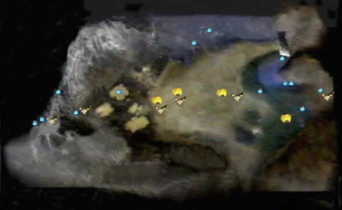
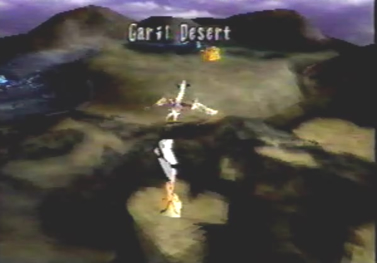
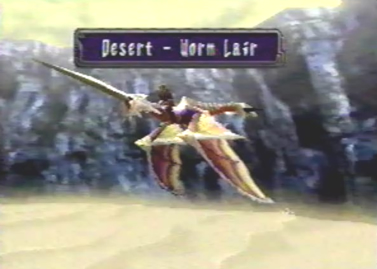
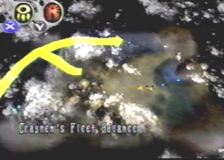
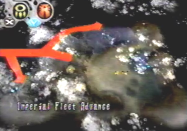

The World Map In Panzer Dragoon Saga, the world map serves as a link to the many different locations throughout the game. Each location, as well as your dragon, is positioned on the map. Some locations are represented as blue squares, while others like camp sites and caravans, are represented as tents. You use a white cursor to select each of the many different locations. Once a blue square is selected, the location name will appear below it and the blue square will change to an orange color. When the A button is pressed, the dragon then flies over to that location and descends into that area. There's also one more thing worth mentioning about the World Map. In the upper left hand corner, are symbols for the Imperial fleet and Crayman's fleet. These are two factions of people you have to fight throughout the game. If you press the X, or Y button, the map will zoom out and you will be able to view each fleets advancement. Their advancement is represented by long drawn out yellow and red arrows, showing the locations they have been to. The World Map is so simple and easy to use, you could probably select a location and go to that location with your eyes closed. |
 Some locations are represented as blue squares, while others like camp sites and caravans are represented as tents. |
You use a white cursor to select different locations throughout the map. Once a blue square is selected, the name of that area appears below the square and the square changes from blue to orange. |
 While the location is selected, pressing the A button causes the dragon to fly over to that location and descend into that area. |
 The dragon will then arrive at the area you selected. |
 In the upper left corner, are symbols representing the Imperial fleet and Craymen's fleet. Pressing the X button, will show Craynen's fleets advancement throughout the map, marked by yellow arrows. |
 Pressing the Y button, will show the Imperial fleets advancement throughout the map, marked by red arrows. |